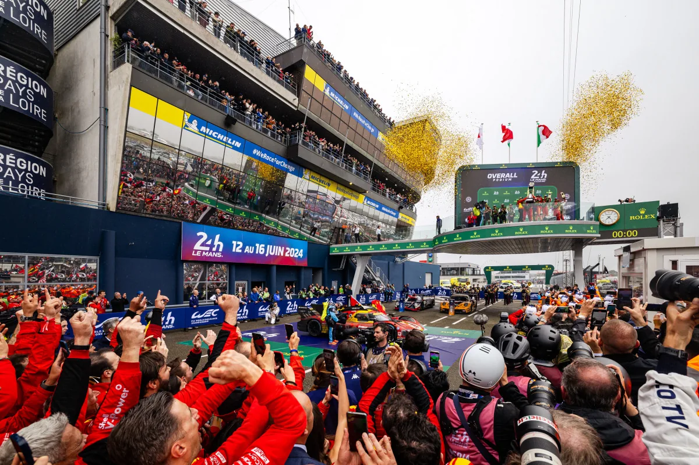

BTS SIO · option SISR — Alternance · Automobile Club de l'Ouest
Antoine Brévard
Une fois par an, le système d'information encaisse la charge d'un événement mondial. Il n'a pas le droit de tomber. C'est là que je travaille.
Sous le spectacle, les systèmes
Promenez le curseur sur l'image
Repères
Réalisations
La situation, le choix, ce qu'il en reste.
Quatre projets menés en production, chacun documenté avec les solutions écartées et la raison du rejet — c'est le raisonnement qui se défend devant un jury, pas seulement le résultat.
Synchronisation des contacts
Le passage au nouvel Outlook condamnait les dossiers publics dont dépendaient plus de 300 boîtes aux lettres. Solution interne bâtie sur Microsoft Graph, architecture MASTER/CORE, principe de zéro perte de données : ce que le collaborateur a saisi lui-même n'est jamais écrasé.
Dossier de choix Sauvegardes Automatisation Données personnelles 02 — SupervisionAlerte sur boîtes saturées
Seuil d'alerte fixé à 95 % après avoir constaté les premiers dysfonctionnements réels à 97 %. Le service est prévenu avant le blocage, plus après.
Indicateurs Exchange Online Tâche planifiée 03 — Mise à dispositionDéploiement des fonds Teams
Licences Teams Premium écartées au profit d'un déploiement par GPO. Contrainte technique réelle : le nouveau client Teams exige des noms en GUID et une miniature par image.
Déploiement GPO Accompagnement 04 — Gestion de parcMises à jour constructeurs
Orchestration de HP Image Assistant et Dell Command Update par un script unique, deux GPO, et une interface qui prévient l'utilisateur avant qu'il n'éteigne son poste au mauvais moment.
Patrimoine PowerShell Maintenance préventiveÉpreuves E4 et E5
Accès direct
Si vous évaluez ce portfolio, voici les entrées utiles — sans avoir à parcourir le site.
Chaque compétence du référentiel, et la réalisation qui la démontre.
Matrice de compétences